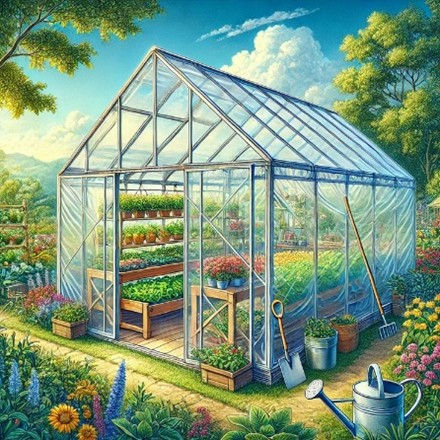

Somos una iniciativa innovadora comprometida con el desarrollo sostenible del campo colombiano a través de la tecnología y las energías renovables. En Green House Solar trabajamos para transformar la agricultura tradicional mediante la implementación de invernaderos solares inteligentes, diseñados especialmente para apoyar a los campesinos de diversas zonas del país.
Es brindar soluciones eficientes, ecológicas y accesibles que permitan mejorar la producción agrícola, optimizar los recursos naturales y garantizar un mejor cuidado de las plantas. Creemos en un futuro donde la tecnología y la naturaleza trabajen juntas para impulsar el progreso del campo y mejorar la calidad de vida de las comunidades agrícolas.

"El futuro del campo nace donde la naturaleza y la innovación se unen."